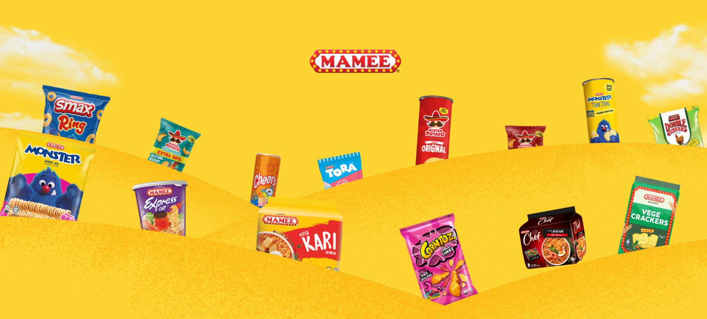

1974
MAMEE Monster
The crunchy noodle snack that emerged from a real consumer-behaviour observation.
MAMEE's story began in 1971 when founder Datuk Pang Chin Hin and his partner started a small instant-noodle factory in Melaka. Production began with Lucky instant noodles and vermicelli in 1972. In 1974, an observation of people eating uncooked noodles led to the development of the crunchy Mamee snack.
MAMEE expanded beyond its early noodle business. Its official history records Double Decker crackers in 1980, Mister Potato in 1992 and Mamee Chef in 2012. A 2019 MAMEE-published story identifies Mister Potato as the company's biggest seller at that time.
The crunchy noodle snack that emerged from a real consumer-behaviour observation.

A major expansion into potato snacks; reported as MAMEE's biggest seller in the 2019 case story.

Expanded the noodle category using specially formulated Mi Tarik technology.

MAMEE now presents multiple snack, noodle, beverage and food-service worlds.
MAMEE's official history identifies Datuk Pang Chin Hin as the founder who started the small factory in Melaka in 1971. The business later developed into MAMEE-Double Decker, a long-running Malaysian food company.
Official MAMEE history ↗
Use the official MAMEE YouTube channel for a video element in the e-Portfolio. It contains brand videos and TV commercials.
Open official channel ↗